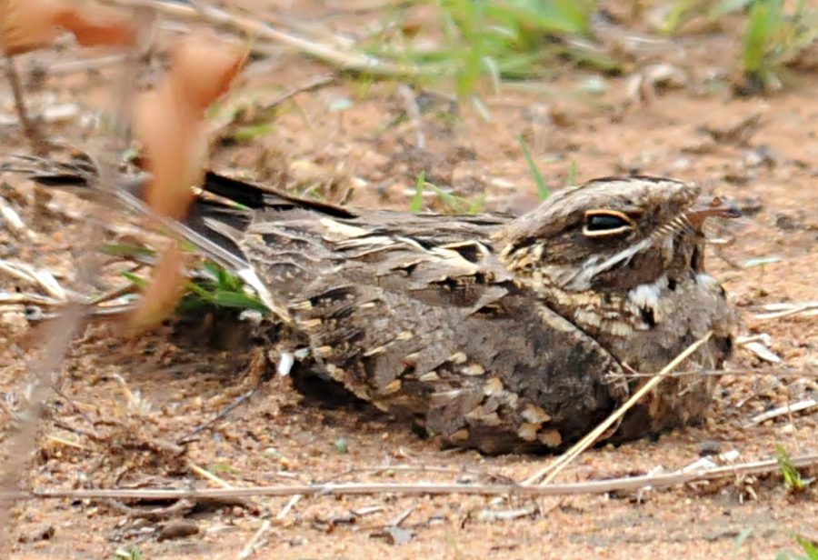

छपकाIndian Nightjar
Caprimulgus asiaticus · Caprimulgidae · BRD-0105

- Scientific name
- Caprimulgus asiaticus Barrett-Hamilton, 1907
- Family
- Caprimulgidae
- Hindi
- छपका
- Local names
- chapka, chhapka, chappak, chhapaka, nightjar
- Status here
- native
- Movement
- Resident, here all year
- IUCN
- LC
- Review
- audited and independently read
When to look कब देखें
Present all year.
Uses and possibilities उपयोग और संभावनाएँ
Drawn from the documented uses in the profile below, where each is labelled traditional, current or a research lead. All uses →
छपका / Indian Nightjar
Caprimulgus asiaticus Barrett-Hamilton, 1907 — Caprimulgidae
छपका — भारत का एक मध्यम आकार की रात्रिचर चिड़िया है जो दिन के बेला में जमीन पर बैठी रहती है और शाम होते ही जाग जाती है। यह छोटी मक्खियों और तितलियों को हवा में पकड़ता है। इसकी आवाज़ "छप-छप-छप" जैसी होती है, जिससे इसका नाम छपका पड़ा है। गाँवों के बीच झाड़ियों और खेतों के पास रात भर इसकी पुकार सुनाई देती है। दिन में इसे ढूँढ़ना मुश्किल होता है क्योंकि यह जमीन पर चिपे हुए रंग में छिप जाता है।
Quick Identification त्वरित पहचान
| Feature | Description |
|---|---|
| Size | Medium nightjar (25–27 cm total length); smaller than Tawny Eagle |
| Plumage | Overall brown, mottled and cryptic; pattern mimics dead leaves and bark |
| Upper parts | Brown with fine barring and mottling; visible white or buff spots on scapulars |
| Under parts | Buff or pale brown with fine dark barring; whitish chin |
| Tail | Brown, graduated; outer feathers with white spots or tips (visible in flight) |
| Wings | Brown with cryptic pattern; white spots on primaries visible in flight |
| Eyes | Large, dark; adapted for nocturnal vision |
| Bill | Short, flat; large mouth gape for catching insects |
| Behaviour | Sits lengthwise on branches or ground; freezes when disturbed; nocturnal; crepuscular vocal |
Field tip: A bird of habit: look for it on the same roosting spot (branch or ground) night after night. During the day, find it motionless along a branch or on the ground, its cryptic plumage making it nearly invisible. Listen for its loud, rhythmic "chop-chop-chop" or "छप-छप" call during twilight and through the night, especially from April to June.
Morphology आकारिकी
Biometrics (subspecies indicus, Indian plains including eastern UP):
| Measurement | Range |
|---|---|
| Total length | 250–270 mm |
| Wing (flattened chord) | 170–195 mm |
| Tail | 90–110 mm |
| Tarsus | 12–14 mm |
| Bill (culmen from base) | 6–8 mm |
| Weight | 52–85 g |
Plumage: Cryptic and mottled overall. Head and neck brown with fine barring. Back, rump, and wing coverts brown with complex mottling of black, buff, and white, providing perfect camouflage against tree bark and ground litter. Distinct white or buff spots visible on scapulars and coverts. Underparts buff-white with dark barring, densest on breast. Chin and throat whitish. Tail brown, graduated, with white spots on outer feathers (visible in flight). Primaries and secondaries brown with white spots or bars on inner webs, conspicuous in flight.
Facial features: Large dark eye, positioned for nocturnal vision. Facial disc subtle.
Bill: Very short, flattened dorso-ventrally; enormous gape for catching insects in flight.
Legs and feet: Short; feathered down the tarsi.
Sexes: Males have white spots on wings and tail more prominent than females.
Juveniles: Slightly paler and duller than adults; develop adult cryptic pattern with age.
Vocalisations
Indian Nightjar is highly vocal, particularly during breeding season (April-June).
- Advertising call: A loud, rhythmic "chop-chop-chop-chop" or "छप-छप-छप-छप" (phonetically "chopchop"), repeated in rapid sequence, rising and falling in volume. Often described as a "two-in-one" call with the first syllable slightly higher. Call is uttered from dusk through the night, particularly around midnight and pre-dawn. Frequency approximately 1.5–2.5 kHz.
- Wing clap: Males produce a distinctive loud "crack" or "chup" sound by clapping wings together in flight during display dives — a territorial and mate-attraction behaviour.
- Contact call: Softer "cur-cur-cur" or "kerr-kerr" between mates.
Behaviour & Ecology व्यवहार और पारिस्थितिकी
Nocturnal aerial insectivore: Indian Nightjar is strictly nocturnal, hunting flying insects on the wing from dusk through the night. It catches insects in flight using its enormous gape and whisker-like bristles around the mouth.
Sit-and-wait hunter: Unlike swallows that continuously hunt, nightjars often perch and watch for insects, then dart out to catch them.
Cryptic roosting: During the day, sits motionless along a branch (lengthwise) or on the ground, its cryptic plumage rendering it nearly invisible.
Territory and display: Males are highly territorial during breeding season, calling repeatedly from the same perches each night. Males also perform dramatic wing-clapping displays during twilight and pre-dawn, diving and producing loud "crack" sounds to advertise presence.
Breeding: Monogamous or serially monogamous. Nests on the ground, with no nest construction — eggs laid directly on bare earth or leaf litter in sheltered spots (under bushes, rock overhangs, fallen logs).
Life Cycle / Phenology जीवन चक्र
- February–March: Pairing begins; males start territorial calling
- April–June: Peak breeding season; males most vocal (especially midnight and pre-dawn); females lay eggs
- May–July: Incubation (17–21 days) and chick-rearing (21–25 days fledging); two broods may occur
- July–August: Chicks fledge; second broods if first clutch lost
- August–November: Post-breeding period; calling decreases; juveniles learn to forage
- November–February: Winter; birds quieter but still present; some calling on mild nights
Host Plants or Prey आहार
Strictly insectivorous:
- Flying insects caught in flight: small moths, mayflies, flying termites (alates)
- Grasshoppers and locusts (occasionally)
- Beetles and other flying insects
- Insects attracted to lights (if present in villages)
Predators / Natural Enemies शत्रु
- Shikra (Accipiter badius) — hunts roosting birds at dawn
- Pallid Harrier (Circus macrourus) — hunts at dawn
- Domestic cats and dogs — take roosting birds
- Snakes — consume eggs from ground nests
- Crows (Corvus spp.) — may mob and harass; occasionally take chicks
Agricultural / Human Relevance कृषि प्रासंगिकता
Natural pest control: By hunting flying insects through the night, Indian Nightjar provides valuable pest-control services, particularly around cultivated areas where insects may otherwise damage crops or become agricultural pests.
Cultural significance: In rural Indian tradition, the nightjar's distinctive call is often associated with the coming of rains and the monsoon season. The bird's nocturnal nature and cryptic behaviour have led to folklore and superstitions in some regions.
Protected status: Schedule IV of the Wildlife (Protection) Act, 1972 (India). The species is legally protected throughout the country.
Expected Locally स्थानीय रूप से अपेक्षित
Not a field record. Written from published accounts for eastern Uttar Pradesh. No confirmed local sighting yet — if you have seen it, that is what the atlas needs.
अभी तक स्थानीय पुष्टि नहीं। यह विवरण प्रकाशित स्रोतों से है, किसी अवलोकन से नहीं।
Indian Nightjar is expected year-round as a resident in Basti and Ayodhya districts, particularly in areas with dry deciduous forest, scrub, and open cultivation with scattered trees. Listen for the loud "chop-chop-chop" call during twilight (early evening and pre-dawn) from February onwards, with peak calling from April to June. Search for roosting birds during the day along branches in mango orchards, neem groves, and forest edges, where their cryptic plumage makes them difficult to spot. A first record for the atlas would be a photograph of a roosting bird showing the cryptic mottled plumage and large eye, or recording of the distinctive call, with date and location.
Distribution वितरण
Global range: Widespread across the Indian subcontinent from the Himalayas to the Deccan Plateau and Western Ghats.
In India: Common resident throughout the mainland, absent from the wettest forest regions and the highest mountains.
In Uttar Pradesh: Resident throughout the state in suitable habitat (dry forests, scrub, cultivation).
In Basti district / eastern UP: Expected as a resident in deciduous forests and scrubby areas with scattered trees; probably absent from densely forested regions.
Research Questions शोध प्रश्न
- Where are the roosting sites of Indian Nightjars in your area, and are they reused night after night? / छपका दिन में कहाँ बैठता है? — Mark roosting branches; visit regularly to confirm reuse.
- What is the seasonal variation in calling activity, and does it correlate with temperature or rainfall? / कब सबसे ज़्यादा पुकारता है? — Record call activity through the year (simple notebook record, no equipment needed).
- What insects are caught and consumed, and how does diet change seasonally? / क्या खाता है? — Collect and examine pellets (regurgitated insect remains) found under roosting perches.
- How do Indian Nightjars respond to artificial lighting in villages? — Observe whether birds are attracted to lights to hunt insects.
- Which ground microhabitats are chosen for nesting? / घोंसला कहाँ बनाता है? — Search for nests and eggs during April-May under bushes and rock overhangs.
Similar Species मिलती-जुलती प्रजातियाँ
| Species | How to tell apart | हिंदी |
|---|---|---|
| Sykes's Nightjar (Caprimulgus mahrattensis) — if range overlaps | Slightly larger; call different (drawn-out, repetitive "churu-churu"); prefers hillier terrain | सीक्स की चपाक — पहाड़ों पर |
| Savanna Nightjar (Caprimulgus affinis) — if distribution overlaps | Smaller; call different (rapid "dit-dit-dit-chit"); different habitat preference | बड़ी चपाक — कम सामान्य |
| Common Nighthawk (if vagrant) | American species; different call; very rare vagrant to India | दुर्लभ |
Field rule: Medium-sized cryptic brown bird + perches lengthwise on branch or ground + large eye + loud "chop-chop-chop" call at night + cryptic daytime behaviour = Indian Nightjar. The rhythmic call is unmistakable.
Taxonomy & Classification वर्गीकरण
Original description. This species was first described as Caprimulgus indicus by George Finlayson in 1822 from specimens collected in the Tenasserim region (modern Myanmar). A later subspecific description by Edward Hume in 1878 assigned the name C. asiaticus indicus to Indian populations. A subsequent systematic revision by George Barrett-Hamilton in 1907 elevated this to species status, which is now accepted.
Subspecies. Two subspecies are recognised: C. a. indicus (Indian subcontinent and this subspecies in UP) and C. a. asiaticus (Southeast Asia). The Indian subspecies is darker and more heavily marked than the Southeast Asian form.
Family and order placement. Order Caprimulgiformes; family Caprimulgidae (nightjars). Caprimulgidae is an ancient family with a fossil record going back millions of years.
Phylogenetic notes. Genetic studies place Indian Nightjar within the Caprimulgus genus as part of a clade of Asian nightjars, distinct from African and European species.
IUCN status rationale. Assessed as Least Concern (LC). The species is widespread, maintains stable populations, and shows high tolerance for human-modified habitats.
Photo Gallery फोटो गैलरी
No photos yet — add field photos to media/species/indian_nightjar/ and run node scripts/sync_photos.js.
Photos needed आवश्यक फोटो
- [ ] Roosting bird on branch showing cryptic mottled plumage (जमीन या डाली पर)
- [ ] Calling male during twilight (पुकारते हुए)
- [ ] In flight showing white wing spots (उड़ते समय सफ़ेद धब्बे)
- [ ] Close-up of head showing large eye and bill gape (आँख और मुँह)
- [ ] On ground during daytime roosting (जमीन पर छिपा हुआ)
References संदर्भ
- Finlayson, G. (1822). A Journal of Voyage to the East Indies (Letter describing birds). London.
- Ali, S. & Ripley, S.D. (1987). Handbook of the Birds of India and Pakistan. Vol. 1. Oxford University Press, New Delhi.
- Grimmett, R., Inskipp, C. & Inskipp, T. (2011). Birds of the Indian Subcontinent. 2nd ed. Christopher Helm, London.
- Rasmussen, P.C. & Anderton, J.C. (2005). Birds of South Asia: The Ripley Guide. Smithsonian Institution, Washington DC.
- Cleere, N. (2011). Nightjars, Potoos and Frogmouths: Caprimulgidae, Nyctibiidae, Podargidae. Oxford University Press.
- BirdLife International (2024). Caprimulgus asiaticus. IUCN Red List of Threatened Species. Ver. 2024.
- GBIF Occurrence Data — Caprimulgus asiaticus, Uttar Pradesh (2010–2025).
Source file: species/fauna/birds/indian_nightjar.md